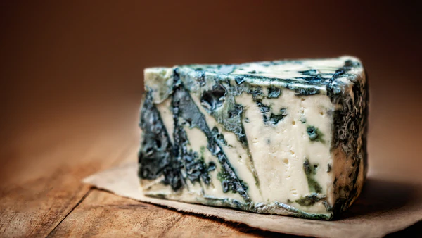
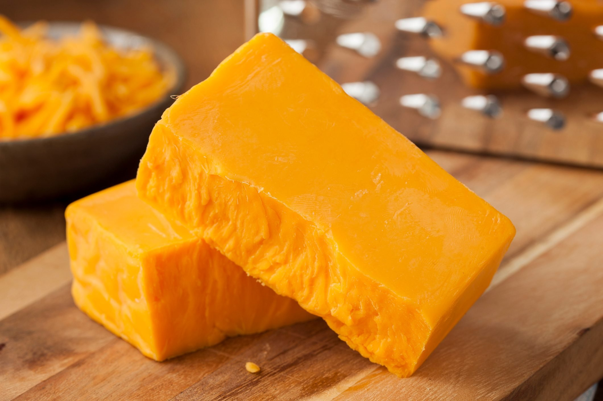

There are different kinds of cheese around the world! If you have a cheese that you can recommend to us, please tell the club leaders at F106 on Tuesday during lunch! This is what we currently have in our hall of fame!
Gorgonzola
Gorgonzola is a famous Italian blue-veined cheese, known for its pungent, creamy, and salty flavor, and made from unskimmed cow's milk. It's a Protected Designation of Origin (PDO) cheese, meaning it can only be produced in specific regions of Italy.
Cheddar
Cheddar cheese (or simply cheddar) is a natural cheese that is relatively hard, off-white (or orange if colourings such as annatto are added), and sometimes sharp-tasting. It originates from the English village of Cheddar in Somerset, South West England.
Wensleydale
Wensleydale is a style of cheese originally produced in Wensleydale, North Yorkshire, England, but now mostly made in large commercial creameries throughout the United Kingdom. The term "Yorkshire Wensleydale" can only be used for cheese that is made in Wensleydale.